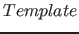
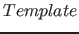

A predicate or function is said to be higher-order if it takes calls as arguments. The built-ins call, apply, and find_all are higher-order. The predicate call( ,
, ,
, ,
, ), where is an atom or a structure, calls the predicate named by with the arguments that are specified in together with extra arguments ,,. The function apply(,,,) is similar to call, except that apply returns a value. The function findall(,) returns a list of all possible solutions of call() in the form of . Other higher-order predicates include call_cleanup/2, catch/3, count_all, freeze/2, not/1, maxof/2-3, maxof_inc/2-3, minof/2-3, minof_inc/2-3, once/1, time/1, time2/1, and time_out/3. All of these higher-order predicates are defined in the basic module, except for time/1, time2/1, and time_out/3, which are defined in the sys module. Higher-order calls cannot contain assignments or loops.
), where is an atom or a structure, calls the predicate named by with the arguments that are specified in together with extra arguments ,,. The function apply(,,,) is similar to call, except that apply returns a value. The function findall(,) returns a list of all possible solutions of call() in the form of . Other higher-order predicates include call_cleanup/2, catch/3, count_all, freeze/2, not/1, maxof/2-3, maxof_inc/2-3, minof/2-3, minof_inc/2-3, once/1, time/1, time2/1, and time_out/3. All of these higher-order predicates are defined in the basic module, except for time/1, time2/1, and time_out/3, which are defined in the sys module. Higher-order calls cannot contain assignments or loops.
Subsections
Claudio Cesar de Sa
2016-05-29